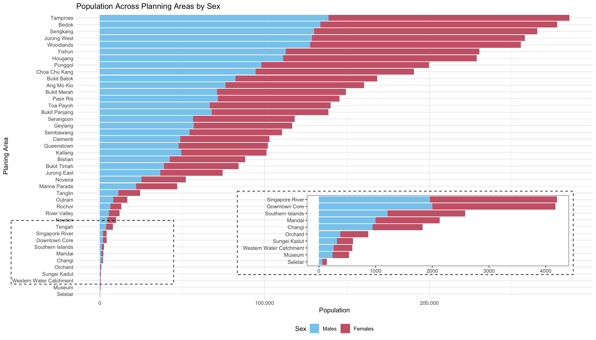
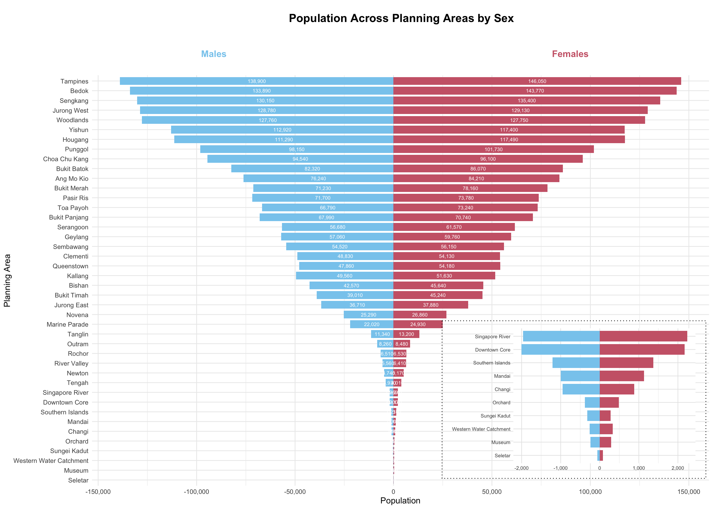

pacman::p_load(tidyverse, patchwork, ggthemes, knitr, cowplot)Take Home Exercise - classmate
Phase 2: three good design principles and three areas for further improvement
1 Original submission
The original visualization was created by our classmate Calvin Tan Song Hao. Please refer to this link for the original submission.
2 Libraries and Data
Originally, five R packages will be used for the preparation:
The data file - respopagesex2024 will be used:
sg_data <- read_csv("data/respopagesex2024.csv")Fixing Age Column Inconsistency:
sg_data$Age <- as.character(sg_data$Age)
sg_data$Age[sg_data$Age == "90_and_Over"] <- "90"
sg_data$Age <- as.numeric(sg_data$Age)Binning Age Column:
Young: Singapore residents aged 0 to 24
Economically_Active: Singapore residents aged 25 to 64
Aged: Singapore residents aged 65 and above
sg_data$Age_Group <- cut(
sg_data$Age,
breaks = c(-1, 24, 64, Inf),
labels = c("Young", "Economically_Active", "Aged"),
right = TRUE
)3 Visualisations
3.1 Population Across Planning Areas by Sex

3.1.1 Good design principles
Use of inset plot: The use of an inset plot is particularly effective. It provides a magnified view of planning areas with relatively small populations that would otherwise appear almost invisible in the main chart. This ensures that no data is excluded from analysis, promoting inclusiveness and allowing for scale sensitivity without distorting the overall pattern of the chart.
Clear color coding: Color coding by sex is implemented using familiar and easily distinguishable hues—blue for males and red for females. This choice allows viewers to quickly interpret the distribution of population by gender across different areas without needing to consult the legend repeatedly.
Horizontal bar chart with proper sorting: The horizontal bar chart is well-structured, with planning areas sorted in descending order of total population. This arrangement supports effective comparative analysis and, importantly, accommodates long area names in a way that avoids label clutter, improving overall readability.
3.1.2 Areas for further improvement
Stacked bars obscure comparison across genders: The female bars are stacked on top of the male bars, making it difficult to compare female populations across planning areas since they do not share a common baseline. This limits interpretability and distorts direct comparisons. A better approach would be to use a population pyramid format, with males and females on opposite sides of a central axis. Additionally, labeling each bar with the exact population figure would provide immediate numerical clarity and make the chart more informative.
Redundant legend placement and layout inefficiency: Although the legend is useful, it is somewhat redundant given the clear color-coding. It could be relocated near the inset chart to save space and reduce clutter. In the original layout, overlapping labels made it hard to read planning area names. Removing the legend from its current position would allow the chart to be taller and cleaner, improving overall readability.
Lack of summary indicators: The chart would benefit from the addition of vertical median lines for both male and female populations. These lines would serve as reference benchmarks, allowing users to quickly identify which planning areas have populations above or below the median. This simple addition would enhance interpretability and provide a clearer statistical context to the viewer.
3.1.3 Makeover
library(ggplot2)
library(dplyr)
library(cowplot)
library(scales)
# Prepare data
demography_sex <- sg_data %>%
group_by(PA, Sex) %>%
summarise(Pop = sum(Pop), .groups = "drop") %>%
group_by(PA) %>%
mutate(Total = sum(Pop)) %>%
filter(Total > 0) %>%
# make males negative so their bars extend left
mutate(Pop = ifelse(Sex == "Males", -Pop, Pop)) %>%
ungroup()
# Sort planning areas by descending total population
pa_order <- demography_sex %>%
distinct(PA, Total) %>%
arrange(desc(Total)) %>%
pull(PA)
demography_sex$PA <- factor(demography_sex$PA, levels = rev(pa_order))
# Main pyramid plot
main_plot <- ggplot(demography_sex, aes(x = Pop, y = PA, fill = Sex)) +
geom_col(width = 0.8) +
geom_text(aes(label = comma(abs(Pop))),
position = position_stack(vjust = 0.5),
size = 2.5, color = "white") +
scale_fill_manual(values = c("Males" = "#88CCEE", "Females" = "#CC6677")) +
scale_x_continuous(labels = comma) +
labs(x = "Population", y = "Planning Area") +
theme_minimal() +
theme(
plot.title = element_blank(),
axis.title = element_text(size = 12),
axis.text = element_text(size = 9),
legend.position = "none"
)
# Inset: bottom 10 PAs by absolute total
inset_order <- demography_sex %>%
group_by(PA) %>%
summarise(Total = sum(abs(Pop)), .groups = "drop") %>%
arrange(Total) %>%
slice_head(n = 10) %>%
arrange(desc(Total)) %>%
pull(PA)
inset_data <- demography_sex %>%
filter(PA %in% inset_order) %>%
mutate(PA = factor(PA, levels = rev(inset_order)))
inset_plot <- ggplot(inset_data, aes(x = Pop, y = PA, fill = Sex)) +
geom_col(width = 0.8) +
scale_fill_manual(values = c("Males" = "#88CCEE", "Females" = "#CC6677")) +
scale_x_continuous(labels = comma) +
theme_minimal(base_size = 9) +
theme(
axis.title = element_blank(),
axis.text.y = element_text(size = 7),
axis.text.x = element_text(size = 7),
panel.background = element_rect(fill = "white", colour = NA),
panel.grid.major = element_line(color = "grey90"),
legend.position = "none"
)
# Dotted rectangle indicating zoom area (just outside the inset)
zoom_box <- ggdraw() +
geom_rect(aes(
xmin = 0.62, # just to the left of inset x = 0.63
xmax = 0.63 + 0.35 + 0.01, # inset x + width + padding
ymin = 0.08 - 0.01, # inset y - padding
ymax = 0.08 + 0.34 + 0.01 # inset y + height + padding
),
colour = "black",
linetype = "dotted",
fill = NA
)
# Sex labels
label_plot <- ggdraw() +
draw_label("Females", x = 0.8, y = 0.5, fontface = "bold", color = "#CC6677", size = 13) +
draw_label("Males", x = 0.3, y = 0.5, fontface = "bold", color = "#88CCEE", size = 13)
# Title
title_plot <- ggdraw() +
draw_label("Population Across Planning Areas by Sex",
fontface = "bold", size = 16, hjust = 0.3)
# Assemble all plots
final_plot <- plot_grid(
title_plot,
label_plot,
ggdraw(main_plot) +
draw_plot(inset_plot, x = 0.63, y = 0.08, width = 0.35, height = 0.34) +
draw_plot(zoom_box, x = 0, y = 0, width = 1, height = 1),
ncol = 1,
rel_heights = c(0.07, 0.07, 0.86)
)
print(final_plot)